Create Simulated Data for Seriation Evaluation
Source:R/lines_and_ordered_data.R
create_lines_data.RdSeveral functions to create simulated data to evaluate different aspects of seriation algorithms and criterion functions.
Usage
create_lines_data(n = 250)
create_ordered_data(
n = 250,
k = 2,
size = NULL,
spacing = 6,
path = "linear",
sd1 = 1,
sd2 = 0
)Arguments
- n
number of data points to create.
- k
number of Gaussian components.
- size
relative size (number of points) of components (length of k). If
NULLthen all components have the same size.- spacing
space between the centers of components. The default of 6 means that the components will barely touch at
ds1 = 1(3 standard deviations for each Gaussian component).- path
Are the components arranged along a
"linear"or"circular"path?- sd1
variation in the direction along the components. A value greater than one means the components are mixing.
- sd2
variation perpendicular to the direction along the components. A value greater than 0 will introduce anti-Robinson violation events.
Details
create_lines_data() recreates the lines data set used in for iVAT() in
Havens and Bezdek (2012).
create_ordered_data() (Hahsler et al, 2021) is a versatile
function which creates "orderable"
2D data using Gaussian components along a linear or circular path. The
components are equally spaced (spacing) along the path. The default
spacing of 6 ensures that 2 adjacent components with a standard deviation of
one along the direction of the path will barely touch. The standard
deviation along the path is set by sd1. The standard deviation
perpendicular to the path is set by sd2. A value larger than zero
will result in the data not being perfectly orderable (i.e., the resulting
distance matrix will not be a perfect pre-anti-Robinson matrix and contain
anti-Robinson violation events after seriation). Note that a circular path
always creates anti-Robinson violation since the circle has to be broken at
some point to create a linear order.
References
Havens, T.C. and Bezdek, J.C. (2012): An Efficient Formulation of the Improved Visual Assessment of Cluster Tendency (iVAT) Algorithm, IEEE Transactions on Knowledge and Data Engineering, 24(5), 813–822.
Michael Hahsler, Christian Buchta and Kurt Hornik (2021). seriation: Infrastructure for Ordering Objects Using Seriation. R package version 1.3.2. https://github.com/mhahsler/seriation
See also
seriate(), criterion(), iVAT().
Other data:
Chameleon,
Irish,
Munsingen,
Psych24,
SupremeCourt,
Townships,
Wood,
Zoo,
is.robinson()
Examples
## lines data set from Havens and Bezdek (2011)
x <- create_lines_data(100)
plot(x, xlim = c(-5, 5), ylim = c(-3, 3), cex = .2, col = attr(x, "id"))
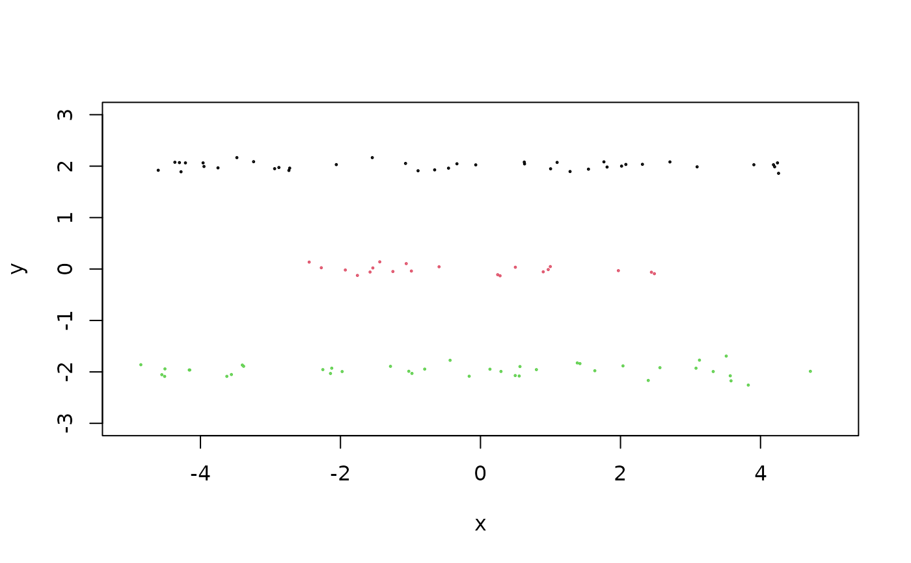
d <- dist(x)
pimage(d, seriate(d, "OLO_single"), col = bluered(100, bias = .5), key = TRUE)
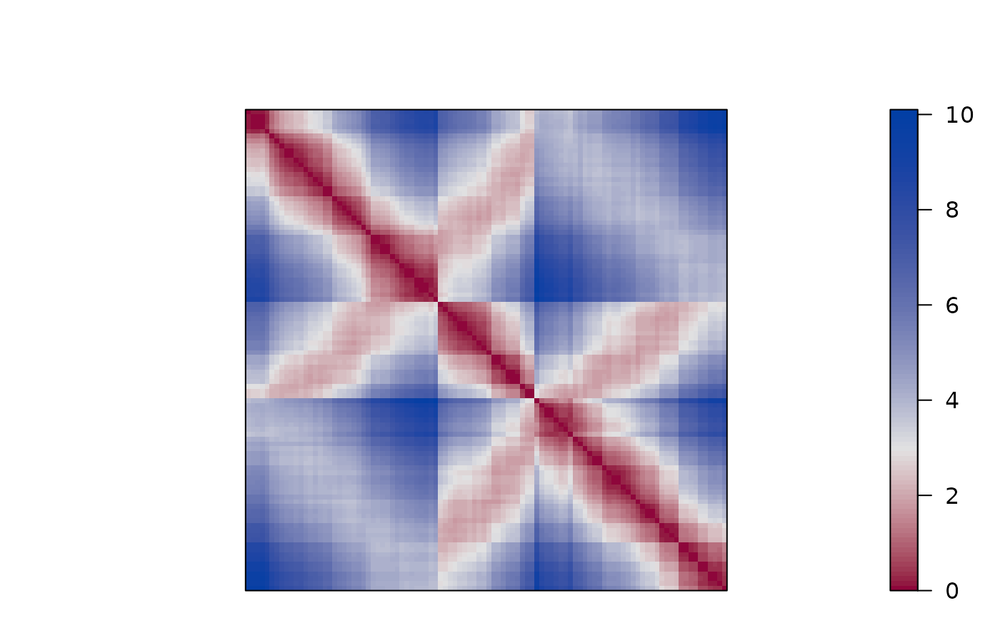
## create_ordered_data can produce many types of "orderable" data
## perfect pre-Anti-Robinson matrix (with a single components)
x <- create_ordered_data(100, k = 1)
plot(x, cex = .2, col = attr(x, "id"))
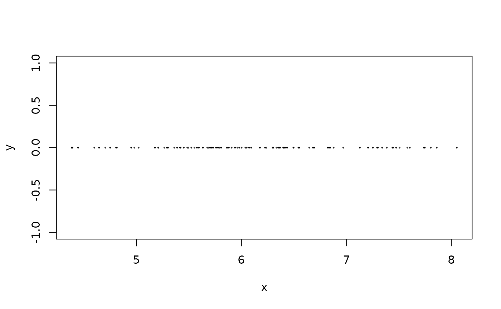
d <- dist(x)
pimage(d, seriate(d, "MDS"), col = bluered(100, bias=.5), key = TRUE)
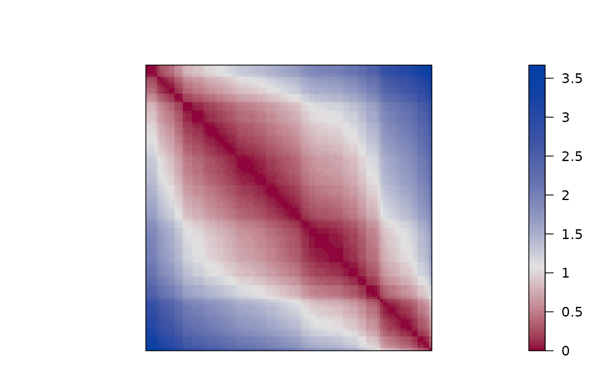
## separated components
x <- create_ordered_data(100, k = 5)
plot(x, cex =.2, col = attr(x, "id"))
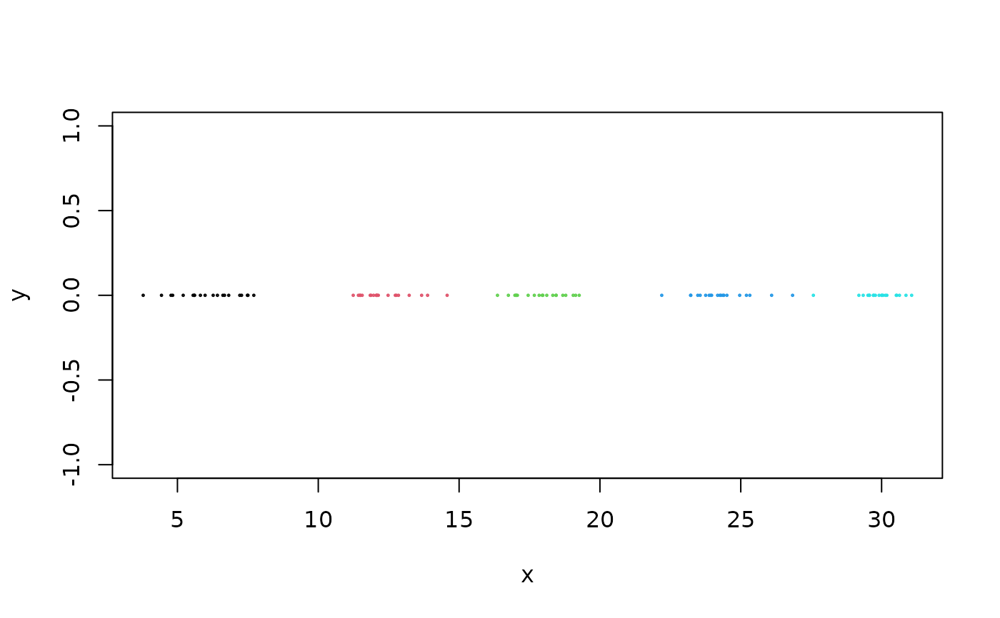
d <- dist(x)
pimage(d, seriate(d, "MDS"), col = bluered(100, bias = .5), key = TRUE)
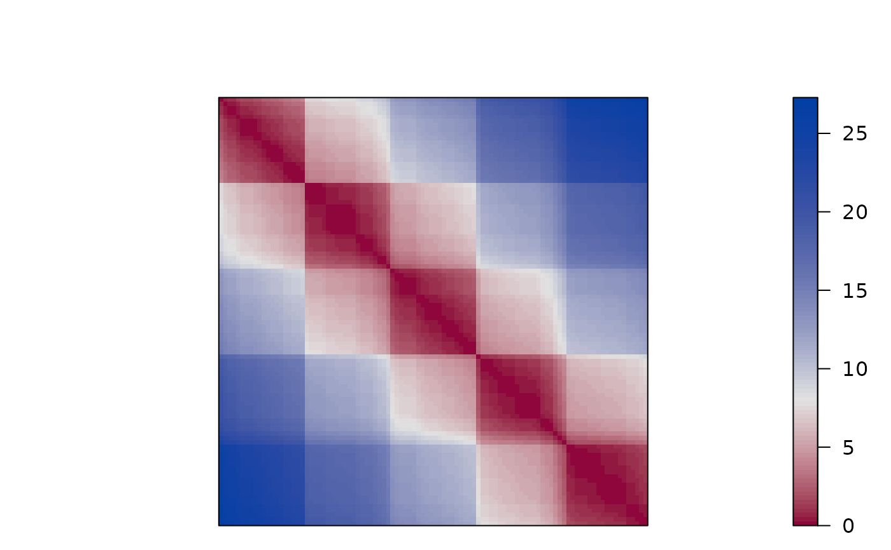
## overlapping components
x <- create_ordered_data(100, k = 5, sd1 = 2)
plot(x, cex = .2, col = attr(x, "id"))
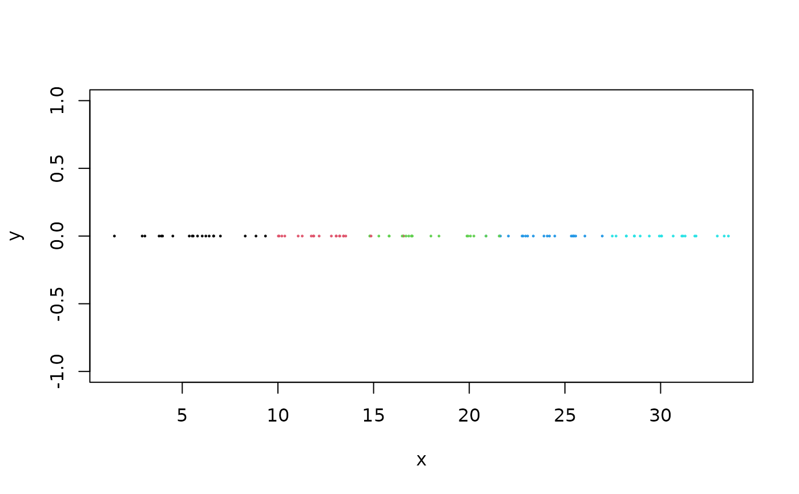
d <- dist(x)
pimage(d, seriate(d, "MDS"), col = bluered(100, bias = .5), key = TRUE)
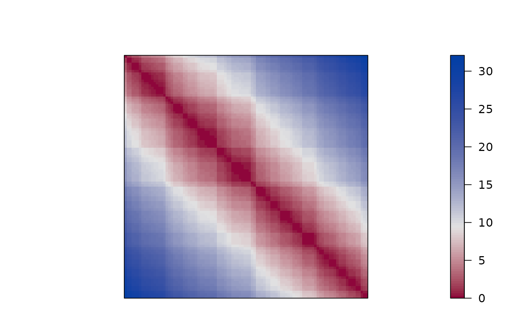
## introduce anti-Robinson violations (a non-zero y value)
x <- create_ordered_data(100, k = 5, sd1 = 2, sd2 = 5)
plot(x, cex = .2, col = attr(x, "id"))
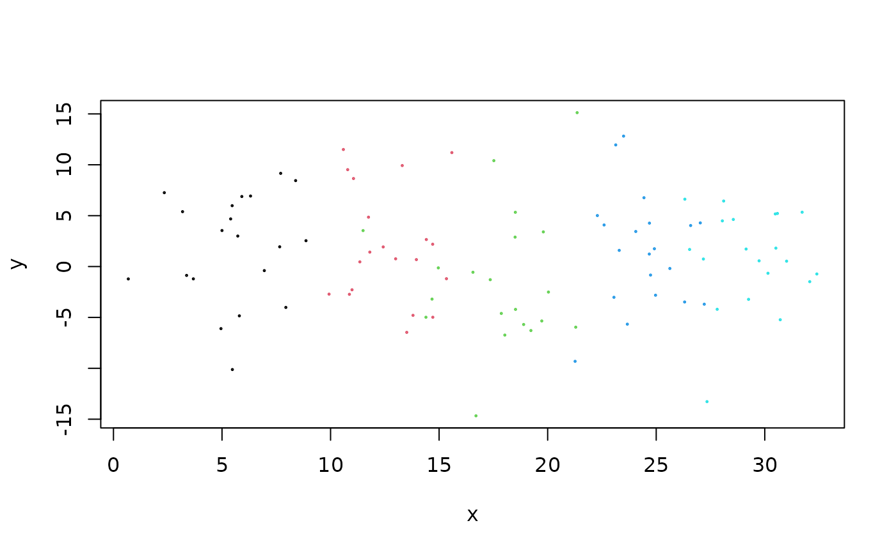
d <- dist(x)
pimage(d, seriate(d, "MDS"), col = bluered(100, bias = .5), key = TRUE)
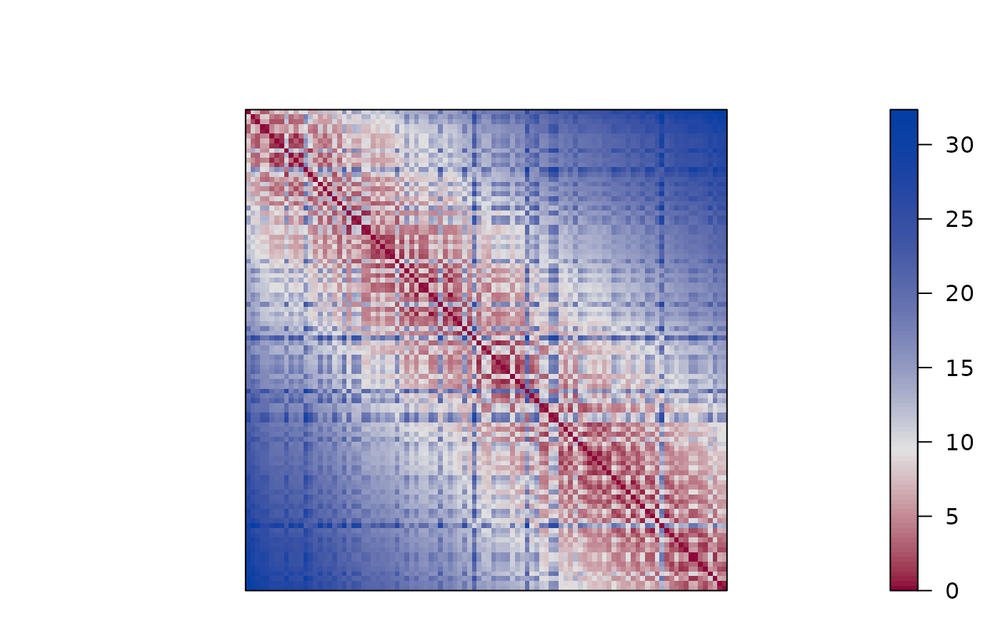
## circular path (has always violations)
x <- create_ordered_data(100, k = 5, path = "circular", sd1 = 2)
plot(x, cex = .2, col = attr(x, "id"))
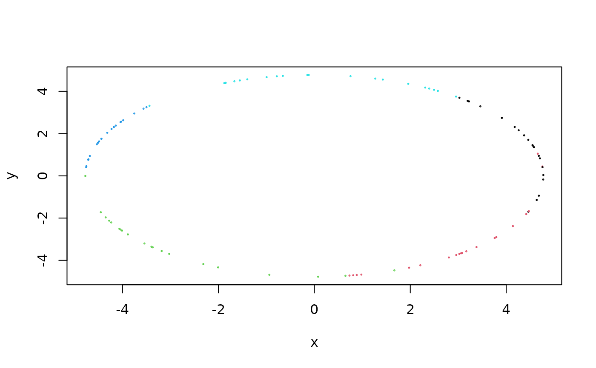
d <- dist(x)
pimage(d, seriate(d, "OLO"), col = bluered(100, bias = .5), key = TRUE)
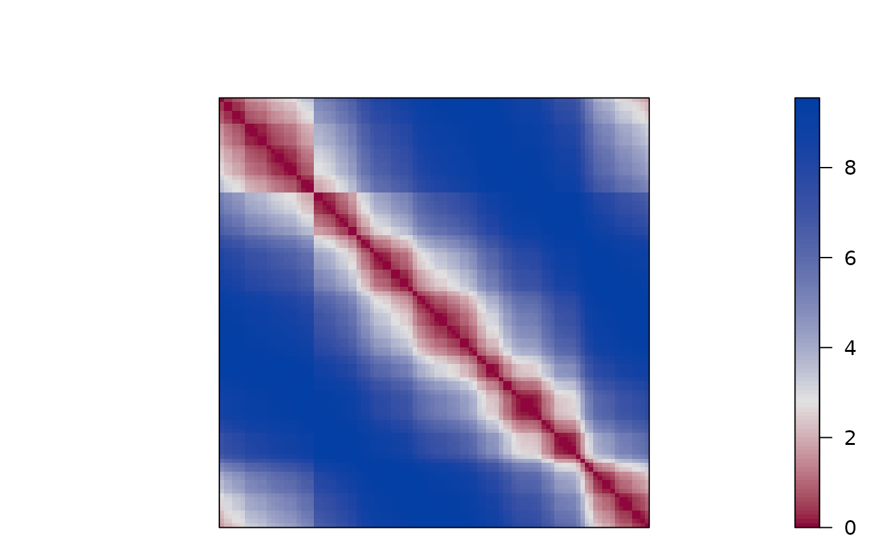
## circular path (with more violations violations)
x <- create_ordered_data(100, k = 5, path = "circular", sd1 = 2, sd2 = 1)
plot(x, cex=.2, col = attr(x, "id"))
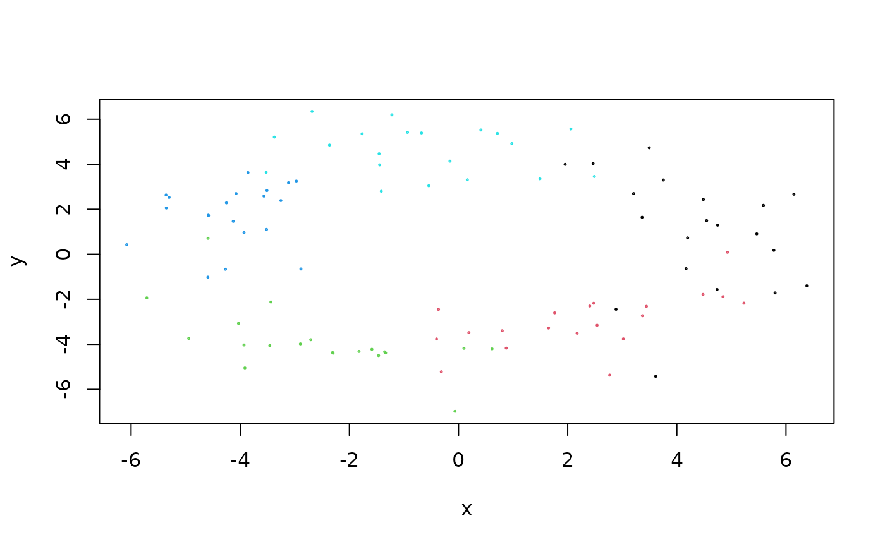
d <- dist(x)
pimage(d, seriate(d, "OLO"), col = bluered(100, bias = .5), key = TRUE)
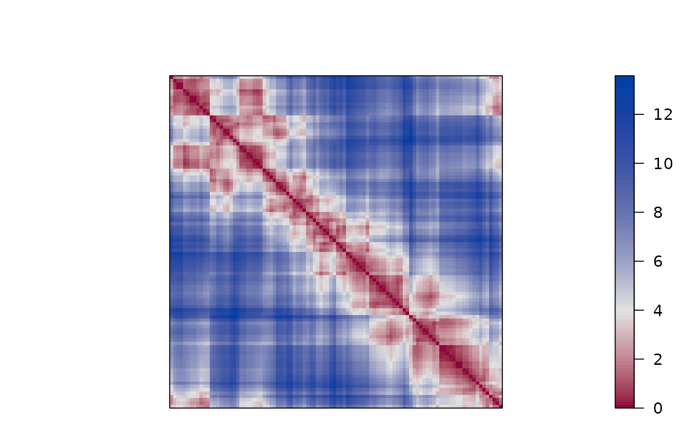